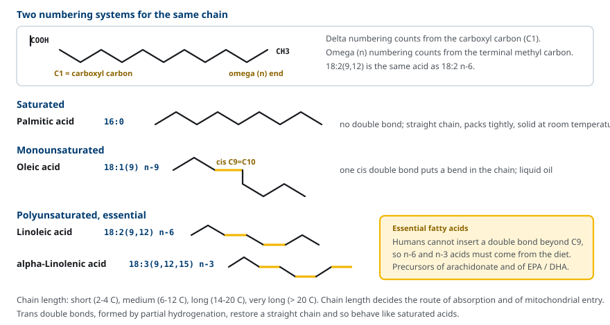
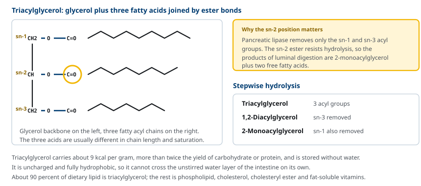
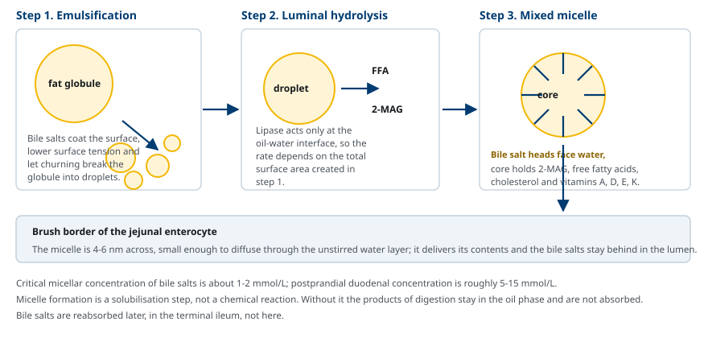
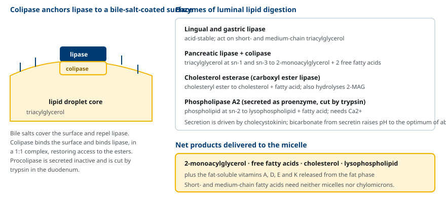
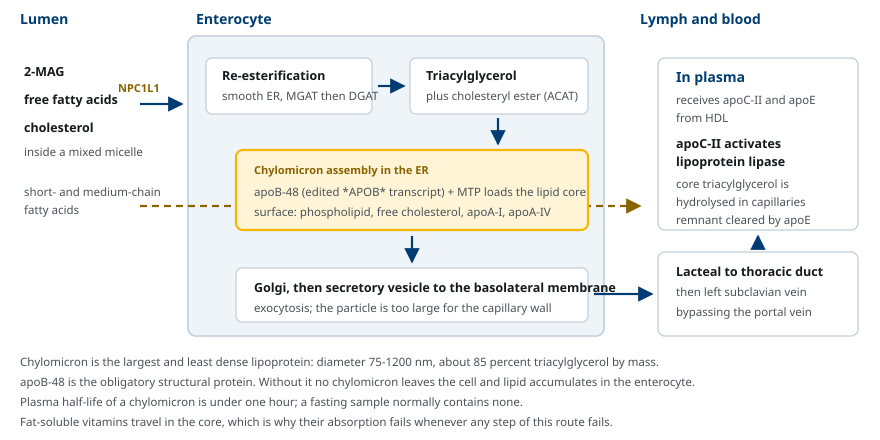

M02-W07-L01 · 대사생화학 · 지질대사
식이지질의 소화·흡수·운반
Digestion, Absorption and Transport of Dietary Lipids
학습목표
- 지방산을 사슬 길이와 포화도로 분류하고 delta·omega 표기법을 서로 변환한다.
- Triacylglycerol의 구조와 ester 결합의 위치별 성질을 설명한다.
- 담즙산염에 의한 emulsification과 mixed micelle 형성이 왜 흡수의 전제 조건인지 설명한다.
- Pancreatic lipase와 colipase의 협동 기전과 내강 소화 산물을 제시한다.
- 장 상피세포에서의 재합성과 chylomicron 조립·분비 과정을 순서대로 설명한다.
- 지질 소화·흡수 장애의 발생 지점을 구분하고 abetalipoproteinemia와 지용성 비타민 결핍을 기전으로 설명한다.
선수지식
- M01-W03-L02 생체막의 구조 — 소수성 상호작용과 amphipathic 분자의 배열
- M02-W09-L02 Cholesterol, 담즙산과 steroid 대사 — 담즙산의 합성과 장간 순환
- M01-W05-L01 효소의 작용 — 보조단백질에 의한 효소 활성화
강의 구성
- 1. 식이지질의 구성과 소화의 과제
- 2. 지방산의 구조와 분류
- 3. Triacylglycerol과 그 밖의 식이지질의 구조
- 4. 담즙산염에 의한 emulsification과 mixed micelle
- 5. Pancreatic lipase와 colipase
- 6. 장 상피세포에서의 흡수와 재합성
- 7. Chylomicron의 조립, 분비와 혈중 대사
- 8. 지질 소화·흡수 장애와 임상적 해석
1. 식이지질의 구성과 소화의 과제
사람이 하루에 먹는 지질은 성인 기준 약 60~150 g이고, 그 가운데 약 90%가 triacylglycerol이다. 나머지는 phospholipid, cholesterol과 cholesteryl ester, 그리고 지용성 비타민 A·D·E·K다. 총 섭취 열량의 25~40%가 지질에서 온다.
지질은 두 가지 이유로 몸에 필요하다. 첫째, 질량당 에너지 밀도가 가장 높다. Triacylglycerol은 1 g당 약 9 kcal을 내는데, 이는 탄수화물이나 단백질의 약 4 kcal의 두 배가 넘는다. 수화되지 않은 상태로 저장되므로 같은 에너지를 glycogen으로 저장할 때보다 훨씬 가볍다. 둘째, 지질은 에너지원이 아닌 역할도 한다. 세포막의 phospholipid, 신호 전달에 쓰이는 eicosanoid, 그리고 지용성 비타민의 운반체가 모두 식이지질에서 유래한다.
문제는 용해도다. 소화기관의 내강은 물로 차 있고 소화효소는 물에 녹은 상태로 작동한다. 그런데 triacylglycerol은 전하가 없고 거의 완전히 소수성이어서 물과 섞이지 않고 큰 덩어리로 뭉친다. 큰 덩어리는 표면적이 작으므로 효소가 접근할 수 있는 ester 결합의 수도 적다. 흡수 단계에서도 같은 문제가 반복된다. 장 상피 표면에는 물이 거의 흐르지 않는 unstirred water layer가 있어 소수성 분자는 이 층을 통과하지 못한다.
그래서 지질 소화·흡수는 다음 네 과제를 차례로 해결하는 과정으로 정리된다.
- 덩어리를 작은 입자로 쪼개 표면적을 늘린다 — emulsification
- 수용성 효소가 계면에서 작동하게 한다 — pancreatic lipase와 colipase
- 소수성 산물을 수용액에 분산시켜 상피 표면까지 나른다 — mixed micelle
- 흡수된 산물을 혈액으로 내보낼 수 있는 입자로 다시 포장한다 — chylomicron
2. 지방산의 구조와 분류
지방산은 한쪽 끝에 carboxyl기(-COOH)를 가진 탄화수소 사슬이다. 사람의 지방산은 대부분 탄소 수가 짝수이고, 이는 탄소 두 개 단위로 합성되고 분해되기 때문이다.
사슬 길이에 따라 네 가지로 나눈다. 이 구분은 뒤에서 흡수 경로와 미토콘드리아 진입 방식을 가른다.
| 구분 | 탄소 수 | 예 | 특징 |
|---|---|---|---|
| Short-chain | 2~4 | acetate, butyrate | 대장 세균의 발효 산물 |
| Medium-chain | 6~12 | caprylic acid (8:0) | micelle과 chylomicron 없이 흡수된다 |
| Long-chain | 14~20 | palmitic acid (16:0), oleic acid (18:1) | 식이지질의 대부분 |
| Very-long-chain | 20 초과 | lignoceric acid (24:0) | peroxisome에서 산화된다 |
포화도에 따라서는 이중결합이 없는 saturated, 하나인 monounsaturated, 둘 이상인 polyunsaturated로 나눈다. 표기는 탄소수:이중결합수로 쓴다. Palmitic acid는 16:0, oleic acid는 18:1이다.
이중결합의 위치를 적는 방법이 두 가지 있고, 둘을 혼동하지 않아야 한다.
- Delta 표기: carboxyl 탄소를 C1로 두고 센다. Oleic acid는 18:1(9)이다.
- Omega(n) 표기: 사슬 끝의 methyl 탄소에서 센다. Oleic acid는 18:1 n-9이다.
같은 분자를 두 방식으로 적은 것이므로 탄소 수를 알면 변환된다. Linoleic acid는 delta 표기로 18:2(9,12)이고 omega 표기로 18:2 n-6이다. 18 − 12 = 6이기 때문이다.

필수지방산이 생기는 이유는 효소의 한계에 있다. 사람의 desaturase는 carboxyl 쪽에서 C9까지만 이중결합을 넣을 수 있다. 따라서 n-6 위치나 n-3 위치에 이중결합을 가진 지방산은 몸에서 만들 수 없고 식사로 섭취해야 한다.
- Linoleic acid (18:2 n-6) — arachidonic acid(20:4 n-6)의 전구체이고, arachidonic acid는 prostaglandin·thromboxane·leukotriene의 재료다.
- alpha-Linolenic acid (18:3 n-3) — EPA(20:5 n-3)와 DHA(22:6 n-3)의 전구체다.
필수지방산이 결핍되면 피부의 비늘 모양 병변, 상처 치유 지연, 성장 지연이 나타난다. 지방을 거의 포함하지 않은 정맥영양을 장기간 받는 환자에서 나타날 수 있어, 필요 열량의 1~2% 이상을 linoleic acid로 공급한다.
이중결합의 기하 구조도 성질을 바꾼다. 천연 불포화지방산의 이중결합은 거의 모두 cis형이고, cis 결합은 사슬을 약 30도 꺾는다. 꺾인 사슬은 서로 밀착하지 못하므로 녹는점이 낮아져 상온에서 액체가 된다. 반대로 부분 수소화 과정에서 생기는 trans 지방산은 사슬이 다시 곧아져 포화지방산처럼 거동하고, 혈중 LDL을 올리고 HDL을 낮춘다.
3. Triacylglycerol과 그 밖의 식이지질의 구조
Triacylglycerol은 glycerol의 hydroxyl기 세 개에 지방산 세 개가 ester 결합으로 붙은 분자다. Glycerol의 탄소에는 입체화학을 고려한 번호인 sn-1, sn-2, sn-3이 붙는다. 세 자리의 지방산은 보통 서로 다르다.
중요한 점은 세 ester 결합이 효소에 대해 동등하지 않다는 것이다. Pancreatic lipase는 sn-1과 sn-3만 끊고 sn-2는 끊지 못한다. 그래서 내강 소화의 주된 산물이 2-monoacylglycerol이 된다. 이 사실 하나가 뒤의 흡수 과정과 상피세포 안에서의 재합성 경로를 결정한다.

나머지 식이지질도 짧게 정리한다.
- Phospholipid: glycerol의 sn-3에 인산과 염기(choline 등)가 붙어 있다. 머리 부분이 전하를 띠어 amphipathic이고, 그 때문에 micelle과 lipoprotein의 표면을 이룬다. 하루 섭취량은 2~10 g 정도이고 담즙으로 분비되는 양이 더 많다.
- Cholesterol과 cholesteryl ester: 식사로 하루 약 300~500 mg을 섭취한다. Ester 형태는 흡수되지 않으므로 먼저 가수분해되어 유리 cholesterol이 되어야 한다.
- 지용성 비타민 A·D·E·K: 자체로는 소화되지 않지만 지방 상(phase)에 녹아 있어 지방이 분산되고 micelle이 만들어질 때 함께 옮겨진다. 따라서 지방 흡수가 실패하면 비타민 흡수도 함께 실패한다.
4. 담즙산염에 의한 emulsification과 mixed micelle
위에서 lingual lipase와 gastric lipase가 일부 triacylglycerol을 분해하지만, 두 효소는 산성에서 작동하고 주로 짧은 사슬과 중간 사슬을 기질로 삼아 전체 소화량에서 차지하는 비중은 10~20%에 그친다. 본격적인 소화는 십이지장에서 시작한다.
음식의 지방과 아미노산이 십이지장 점막을 자극하면 cholecystokinin(CCK)이 분비된다. CCK는 담낭을 수축시켜 담즙을 내보내고 췌장의 소화효소 분비를 촉진하며 위 배출을 늦춘다. 동시에 산성 내용물은 secretin을 분비시켜 췌장에서 bicarbonate를 내보내게 하고, 그 결과 내강 pH가 약 6~8로 올라가 pancreatic lipase의 최적 pH에 맞춰진다.
담즙에 들어 있는 담즙산염(bile salt)이 첫 번째 과제를 해결한다. 담즙산염은 steroid 핵의 한쪽 면에 hydroxyl기가 몰려 있어 평면의 한쪽은 친수성, 다른 쪽은 소수성인 amphipathic 분자다. 이 분자가 지방 덩어리 표면에 붙으면 표면 장력이 떨어지고, 위와 장의 운동으로 생기는 힘에 의해 덩어리가 작은 입자로 쪼개진다. 이것이 emulsification이다. 쪼개진 입자는 표면이 담즙산염으로 덮여 있어 다시 뭉치지 않는다.

소화가 진행되면 담즙산염은 두 번째 과제를 해결한다. 담즙산염의 농도가 critical micellar concentration(약 1~2 mmol/L)을 넘으면 분자들이 모여 micelle을 만든다. 식후 십이지장의 담즙산염 농도는 약 5~15 mmol/L여서 이 조건이 쉽게 충족된다. 여기에 소화 산물이 섞여 들어간 것을 mixed micelle이라고 한다.
- 겉면: 담즙산염의 친수성 면과 phospholipid의 머리 부분
- 안쪽: 2-monoacylglycerol, 유리지방산, cholesterol, lysophospholipid, 지용성 비타민
Mixed micelle의 지름은 4~6 nm로 emulsion 입자보다 훨씬 작고, 수용액에 투명하게 분산된다. 그래서 unstirred water layer를 확산으로 통과해 상피 표면까지 소화 산물을 실어 나를 수 있다. Micelle 형성은 화학 반응이 아니라 용해 상태를 바꾸는 과정이고, 이 단계가 없으면 소화가 끝난 산물도 흡수되지 않는다.
5. Pancreatic lipase와 colipase
췌장에서 분비되는 pancreatic lipase는 triacylglycerol의 sn-1과 sn-3 ester를 가수분해한다. 능력은 충분하다. 췌장은 하루 소화해야 할 양의 몇 배에 해당하는 lipase를 분비하므로, 분비량이 정상의 10% 이하로 떨어질 때까지는 지방 소화 장애가 나타나지 않는다.
문제는 접근이다. Lipase는 물에 녹아 있고 기질은 지방 입자 안에 있으므로 반응은 계면에서만 일어난다. 그런데 계면은 이미 담즙산염으로 덮여 있고, 담즙산염은 lipase를 계면에서 밀어낸다.
이 모순을 colipase가 해결한다. Colipase는 췌장이 procolipase로 분비한 뒤 십이지장에서 trypsin이 잘라 활성화하는 작은 단백질이다. Colipase는 담즙산염으로 덮인 계면에 결합하고, 동시에 lipase와 1:1로 결합한다. 그 결과 lipase가 계면에 고정되어 ester 결합에 접근한다. Colipase가 없으면 lipase는 활성이 있어도 기질에 도달하지 못한다.

내강에서 작동하는 다른 효소들도 각자의 기질을 처리한다.
| 효소 | 기질 | 산물 | 비고 |
|---|---|---|---|
| Pancreatic lipase + colipase | Triacylglycerol의 sn-1, sn-3 | 2-monoacylglycerol + 유리지방산 2개 | Colipase 필수 |
| Cholesterol esterase | Cholesteryl ester, 2-MAG, 지용성 비타민 ester | 유리 cholesterol + 지방산 | 기질 특이성이 넓다 |
| Phospholipase A2 | Phospholipid의 sn-2 | Lysophospholipid + 지방산 | Trypsin이 활성화, Ca2+ 필요 |
6. 장 상피세포에서의 흡수와 재합성
Mixed micelle이 상피 표면에 닿으면 내용물이 방출되어 세포 안으로 들어간다. 이때 담즙산염은 흡수되지 않고 내강에 남는다. 담즙산염은 회장 말단에서 수송체 ASBT를 통해 따로 재흡수되므로, 소화 작용을 끝까지 수행한 뒤에야 회수된다.
흡수 방식은 분자에 따라 다르다. 유리지방산과 2-monoacylglycerol은 농도 기울기에 따른 확산으로 들어오며 수송체가 이를 돕는다. Cholesterol은 NPC1L1이라는 상피 수송체를 통해 들어오는데, 이 단백질이 약물 ezetimibe의 표적이다. Cholesterol의 흡수율은 식이량의 약 30~50%에 그치고, 식물 sterol은 ABCG5/G8에 의해 다시 내강으로 퍼내어져 거의 흡수되지 않는다.
세포 안으로 들어온 유리지방산과 2-monoacylglycerol은 그대로 두면 다시 밖으로 확산해 나간다. 그래서 상피세포는 이들을 즉시 triacylglycerol로 재합성한다. 반응은 smooth ER에서 두 단계로 진행된다.
1. 유리지방산이 acyl-CoA synthetase에 의해 fatty acyl-CoA로 활성화된다(ATP 소비). 2. MGAT(monoacylglycerol acyltransferase)가 2-monoacylglycerol에 acyl기를 붙여 diacylglycerol을 만들고, DGAT(diacylglycerol acyltransferase)가 한 번 더 붙여 triacylglycerol을 완성한다.
이 경로를 monoacylglycerol pathway라고 하며, 소장 상피세포가 식후에 쓰는 주 경로다. 간과 지방조직은 glycerol 3-phosphate에서 출발하는 다른 경로를 쓴다. 들어온 cholesterol도 대부분 ACAT에 의해 cholesteryl ester로 바뀌어 저장 가능한 형태가 된다.
사슬 길이에 따른 예외가 여기서 중요하다. Short-chain과 medium-chain 지방산은 물에 어느 정도 녹으므로 micelle을 필요로 하지 않고, 상피세포에서 재합성되지도 않는다. 이들은 알부민에 결합한 상태로 문맥을 통해 곧바로 간으로 간다. 이 때문에 지질 흡수 장애 환자에게 medium-chain triacylglycerol(MCT)을 투여하면 담즙산염이나 chylomicron 경로를 우회해 열량을 공급할 수 있다.
7. Chylomicron의 조립, 분비와 혈중 대사
재합성된 triacylglycerol은 세포 안에 쌓아 둘 수 없으므로 혈액으로 내보내야 한다. 그러나 지질 덩어리를 그대로 혈액에 내보낼 수는 없으므로 단백질과 phospholipid로 표면을 감싼 입자, 즉 lipoprotein으로 포장한다. 소장이 만드는 lipoprotein이 chylomicron이다.
조립은 소포체에서 일어나고 두 요소가 반드시 필요하다.
- apoB-48: chylomicron의 구조 단백질이다. APOB 유전자는 간과 소장에서 같은 전사체로 전사되지만, 소장에서는 RNA editing으로 정지 코돈이 만들어져 전장 apoB-100의 48%에 해당하는 짧은 단백질이 만들어진다. 이 때문에 apoB-48에는 LDL receptor가 인식하는 부위가 없다.
- MTP(microsomal triglyceride transfer protein): 소포체 내강에서 apoB-48에 지질을 옮겨 붙여 입자의 중심을 채운다.
완성된 입자는 지름 75~1,200 nm로 모든 lipoprotein 가운데 가장 크고 밀도가 낮으며, 질량의 약 85%가 triacylglycerol이다. Golgi를 거친 뒤 기저측면으로 exocytosis되는데, 크기가 커서 모세혈관 벽을 통과하지 못하므로 림프관(lacteal)으로 들어간다. 림프는 흉관을 거쳐 왼쪽 쇄골하정맥에서 혈액에 합류한다. 즉 chylomicron은 문맥과 간을 거치지 않고 전신 순환에 먼저 도달한다.

혈액에 들어간 chylomicron은 HDL로부터 apoC-II와 apoE를 받아 성숙한다. apoC-II는 모세혈관 내피 표면의 lipoprotein lipase(LPL)를 활성화하고, LPL이 중심부의 triacylglycerol을 가수분해해 지방산을 근육과 지방조직에 내준다. 지질을 잃은 입자는 chylomicron remnant가 되고, apoE를 리간드로 간에서 제거된다. Chylomicron의 혈중 반감기는 1시간 미만이므로 정상적인 공복 혈액에는 chylomicron이 없다. 공복 검사에서 유백색 혈청이 보이면 이 제거 경로의 장애를 의심한다.
8. 지질 소화·흡수 장애와 임상적 해석
지방변(steatorrhea)은 대변 지방 배출이 하루 7 g을 넘는 상태로 정의한다. 원인은 앞 절들에서 다룬 네 단계 중 어디가 막혔는지로 분류하면 명확해진다.
| 막힌 단계 | 대표 원인 | 특징 |
|---|---|---|
| 담즙산염 공급 | 폐쇄성 담도질환, 심한 간질환, 회장 절제 후 담즙산 풀 고갈 | Micelle 형성 실패, 지용성 비타민 결핍이 두드러진다 |
| 췌장 효소 | 만성 췌장염, cystic fibrosis, 췌장암에 의한 췌관 폐쇄 | 효소 보충으로 교정된다 |
| 상피 흡수면 | Celiac disease, 열대성 흡수불량, 광범위 소장 절제 | 지질 외에 다른 영양소 흡수도 함께 떨어진다 |
| 입자 조립·배출 | Abetalipoproteinemia, chylomicron retention disease | 상피세포 안에 지질이 쌓이고 혈중 지질이 낮다 |
Abetalipoproteinemia가 조립 단계 장애의 전형이다. 원인 유전자는 *MTTP*로 MTP를 만들며, 상염색체 열성으로 유전된다. MTP가 없으면 apoB에 지질이 실리지 않으므로 소장은 chylomicron을, 간은 VLDL을 만들 수 없다.
결과는 두 방향에서 나타난다. 축적 측면에서는 소장 상피세포 안에 지질이 쌓여 조직검사에서 상피가 지질로 채워진 모습을 보이고, 흡수되지 못한 지방이 지방변을 만든다. 결핍 측면에서는 혈중 triacylglycerol과 cholesterol이 매우 낮고 apoB를 가진 lipoprotein(chylomicron, VLDL, LDL)이 혈액에서 사실상 검출되지 않는다.
가장 중요한 임상 결과는 vitamin E 결핍이다. Vitamin E는 lipoprotein의 중심부에 실려 운반되므로 운반체가 없으면 조직에 도달하지 못한다. 그 결과 적혈구막이 산화 손상을 받아 가장자리가 톱니처럼 변한 acanthocyte가 나타나고, 신경 축삭이 손상되어 소아기부터 척수소뇌성 보행 장애와 심부 감각 소실이 진행한다. 망막에서는 retinitis pigmentosa가 생긴다. 치료는 지방 섭취 제한과 함께 고용량 지용성 비타민, 특히 vitamin E를 대량 경구 투여하는 것이다. 운반체가 없어도 농도 기울기를 크게 만들면 일부가 수동적으로 흡수되기 때문이다.
마지막으로 검사 해석의 요점을 정리한다. 대변 지방 정량은 민감하지만 번거롭고, 대변 elastase는 췌장 외분비 기능에 특이적이다. 혈중 지질이 낮은 지방변 환자는 흡수나 조립 단계의 장애를, 혈중 triacylglycerol이 매우 높은 환자는 chylomicron 제거 단계의 장애를 가리킨다. 같은 증상도 경로의 어느 지점이 막혔는지에 따라 검사 소견이 반대 방향으로 나타난다.
확인 문항
Pancreatic lipase는 활성이 충분한데도 colipase가 없으면 지방을 소화하지 못한다. 그 이유를 계면의 성질로 설명하라.
해설
Triacylglycerol은 물에 녹지 않으므로 lipase 반응은 지방 입자와 수용액이 만나는 계면에서만 일어난다. 그런데 그 계면은 emulsification을 수행한 담즙산염으로 이미 덮여 있고, 담즙산염은 lipase를 계면에서 밀어낸다. Colipase는 담즙산염으로 덮인 계면에 결합하는 동시에 lipase와 1:1 복합체를 이루어 lipase를 계면에 고정한다. 즉 colipase가 해결하는 것은 효소의 촉매 능력이 아니라 기질에 대한 접근이다.
담즙산염은 소화 산물을 상피세포까지 나른 뒤 함께 흡수되지 않는다. 이 사실이 지질 소화에서 가지는 의미를 설명하라.
해설
담즙산염은 접합되어 거의 완전히 이온화된 상태이므로 막을 수동확산으로 통과하지 못하고 장 내강에 머문다. 그 결과 micelle이 내용물을 상피 표면에 내려놓은 뒤에도 담즙산염은 내강에 남아 다음 지방 입자의 emulsification과 micelle 형성에 반복해서 쓰인다. 회수는 회장 말단의 능동수송체 ASBT를 통해 소화가 끝난 뒤에 이루어지므로, 담즙산 풀이 작아도 하루 분량의 지방을 처리할 수 있다. 회장을 절제하면 이 회수가 끊겨 풀이 고갈되고 지방변이 생긴다.
Medium-chain triacylglycerol이 담즙산 결핍이나 abetalipoproteinemia 환자의 열량 공급에 쓰이는 생화학적 근거를 설명하라.
해설
Medium-chain 지방산(C6~C12)은 긴 사슬 지방산보다 물에 잘 녹으므로 mixed micelle에 실리지 않아도 unstirred water layer를 통과해 흡수된다. 또 상피세포 안에서 triacylglycerol로 재합성되지 않으므로 chylomicron 조립을 필요로 하지 않고, 알부민에 결합한 상태로 문맥을 통해 곧바로 간으로 간다. 따라서 담즙산염 공급 장애와 apoB-48·MTP 결함이라는 두 병목을 모두 우회한다. 다만 필수지방산은 긴 사슬이므로 MCT만으로는 공급되지 않아 별도로 보충해야 한다.
Abetalipoproteinemia 환자에게 vitamin E를 일반 용량이 아니라 대량으로 투여하는 이유를 기전으로 설명하라.
해설
Vitamin E는 소수성이어서 lipoprotein의 중심부에 실려 조직으로 운반된다. MTP가 없으면 chylomicron과 VLDL이 만들어지지 않으므로 운반체 자체가 없고, 흡수된 소량도 조직에 도달하지 못한다. 능동적인 운반 경로를 복원할 수 없으므로, 내강의 농도를 아주 높게 만들어 수동적인 확산으로 넘어가는 양을 늘리는 전략을 쓴다. 이것이 대량 투여의 근거이며, vitamin E 보충이 적혈구의 acanthocyte 형성과 척수소뇌성 신경 증상의 진행을 늦춘다.
Linoleic acid를 delta 표기와 omega 표기로 각각 적고, 사람이 이 지방산을 합성하지 못하는 이유를 설명하라.
해설
Linoleic acid는 탄소 18개에 이중결합 두 개를 가지며, delta 표기로 18:2(9,12), omega 표기로 18:2 n-6이다. 두 표기는 같은 분자를 세는 기준점이 다른 것이고, 18 − 12 = 6이므로 서로 변환된다. 사람의 desaturase는 carboxyl 탄소에서 세어 C9까지만 이중결합을 넣을 수 있으므로 C12에 이중결합을 만들 수 없다. 그래서 linoleic acid는 식사로 섭취해야 하는 필수지방산이고, 이것이 부족하면 하류 산물인 arachidonic acid와 그로부터 만들어지는 eicosanoid도 함께 부족해진다.
공복 혈액을 채취했는데 혈청이 유백색이었다. 이 소견이 가리키는 대사 지점과 그 근거를 설명하라.
해설
혈청의 유백색은 큰 입자인 triacylglycerol 풍부 lipoprotein이 빛을 산란해 생긴다. Chylomicron의 혈중 반감기는 1시간 미만이므로 정상적인 공복 혈액에는 chylomicron이 거의 없다. 따라서 공복 상태의 유백색 혈청은 chylomicron의 제거 단계, 즉 lipoprotein lipase와 그 보조인자(apoC-II, GPIHBP1, LMF1, apoA-V)의 장애를 가리킨다. 조립 단계의 장애인 abetalipoproteinemia는 반대로 혈중 지질이 매우 낮으므로 이 소견과 구분된다. Triacylglycerol이 1,000 mg/dL을 넘으면 급성 췌장염의 위험이 커지므로 즉시 지방 섭취 제한이 필요하다.
참고문헌
- Ferrier DR (ed). Lippincott Illustrated Reviews: Biochemistry. Chapter 15, Dietary Lipid Metabolism.
- Iqbal J, Hussain MM. Intestinal lipid absorption. Am J Physiol Endocrinol Metab 2009;296:E1183–E1194.
- Lowe ME. The triglyceride lipases of the pancreas. J Lipid Res 2002;43:2007–2016.
- Hussain MM. Intestinal lipid absorption and lipoprotein formation. Curr Opin Lipidol 2014;25:200–206.
- Burnett JR, Hooper AJ, Hegele RA. Abetalipoproteinemia. In: Adam MP et al., eds. GeneReviews. University of Washington, Seattle.
- Hegele RA et al. The polygenic nature of hypertriglyceridaemia. Lancet Diabetes Endocrinol 2014;2:655–666.